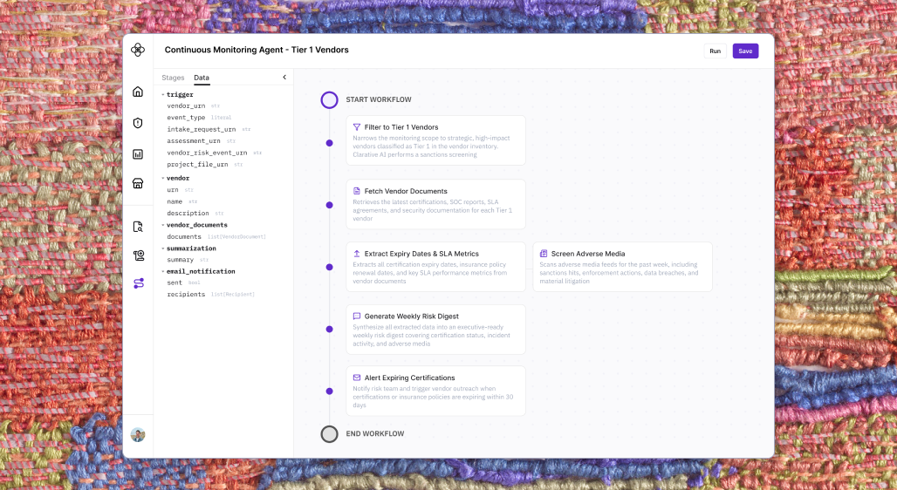
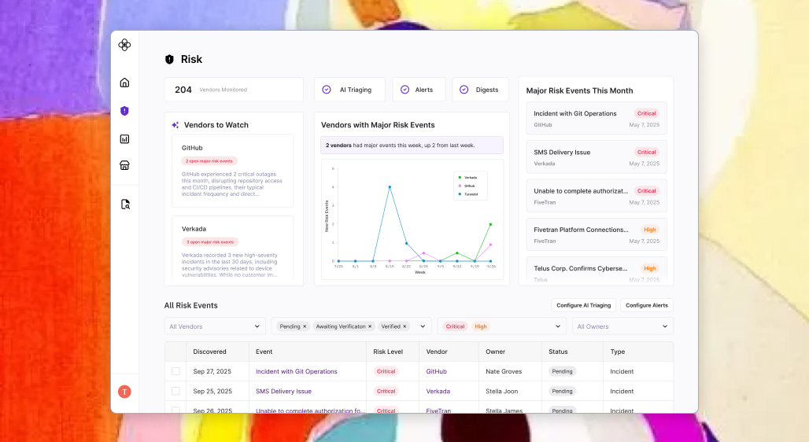
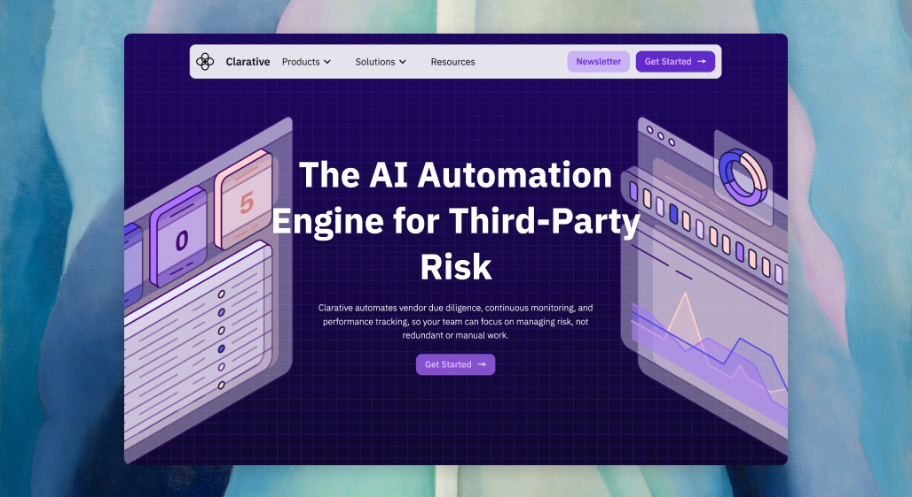
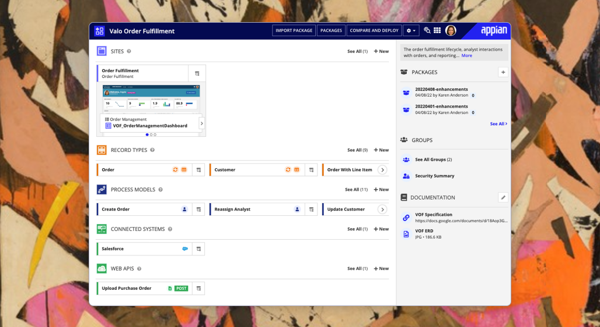

Reinventing Due Diligence
An AI-forward vendor due diligence workflow that reduced quarterly effort from 2–3 weeks to ~2 hours.

Building AI Trust
Designing AI features that earn user trust in high-stakes regulated environments.

Architecting for Different Users
Designing a modular product that serves two distinct risk manager profiles without losing a clear point of view.

Standing out while Fitting In
Building the Clarative brand from scratch — Webflow marketing site, conference materials, and swag worth keeping. Nothing groundbreaking, but all created manually to preserve a little non-AI magic amidst an AI-forward landscape

Designing a Conversation
Designing a Script Builder that turned the complexity of human conversation into something any ops team could configure.

New User Comprehension
A year-long redesign of the Appian developer experience to give new users a way to understand what they're building before diving in.